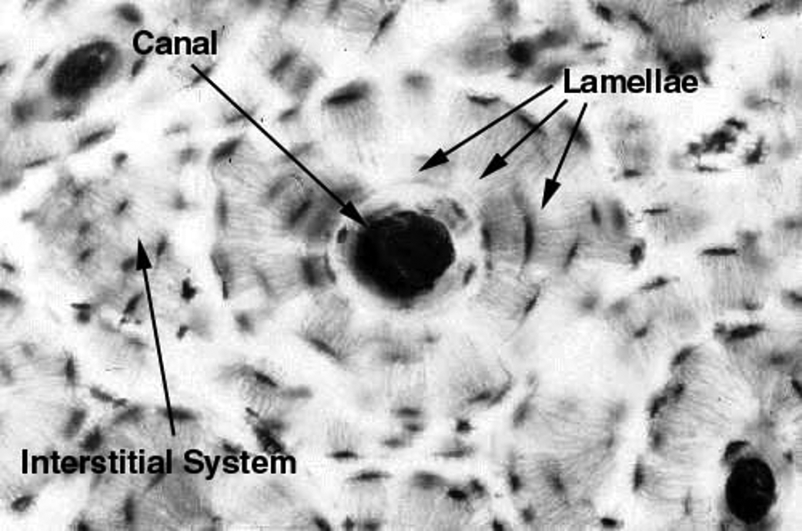
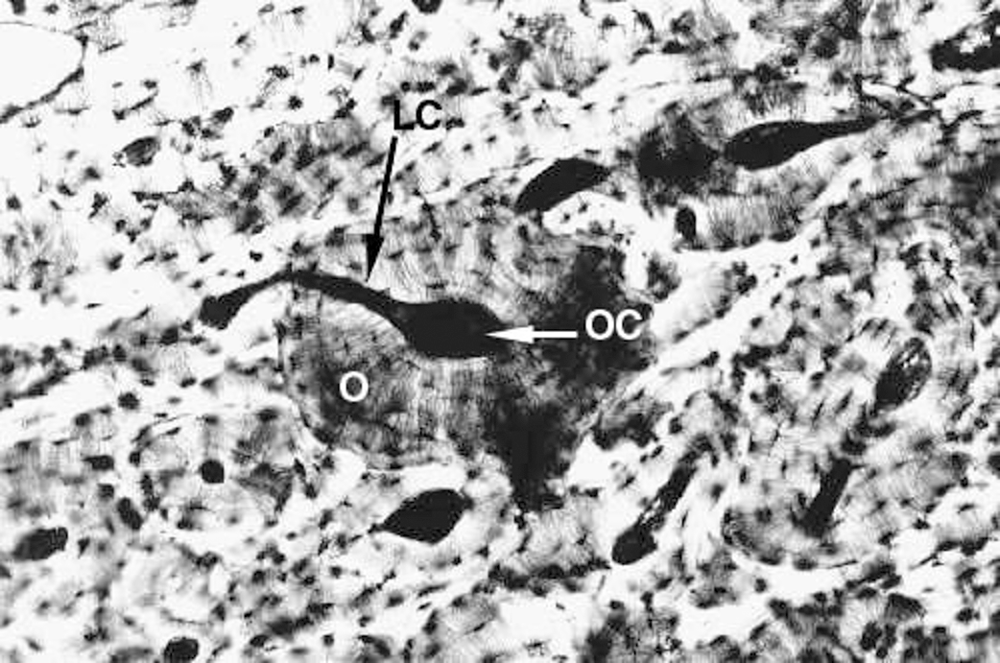
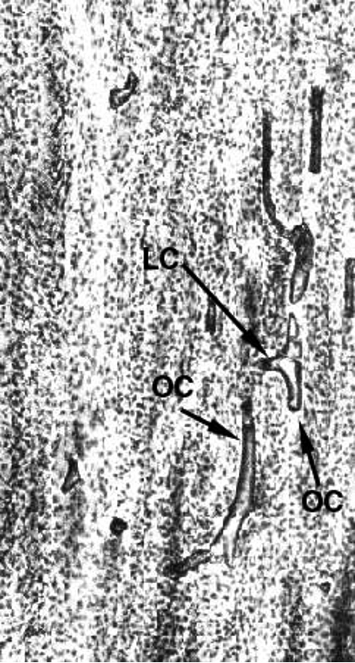
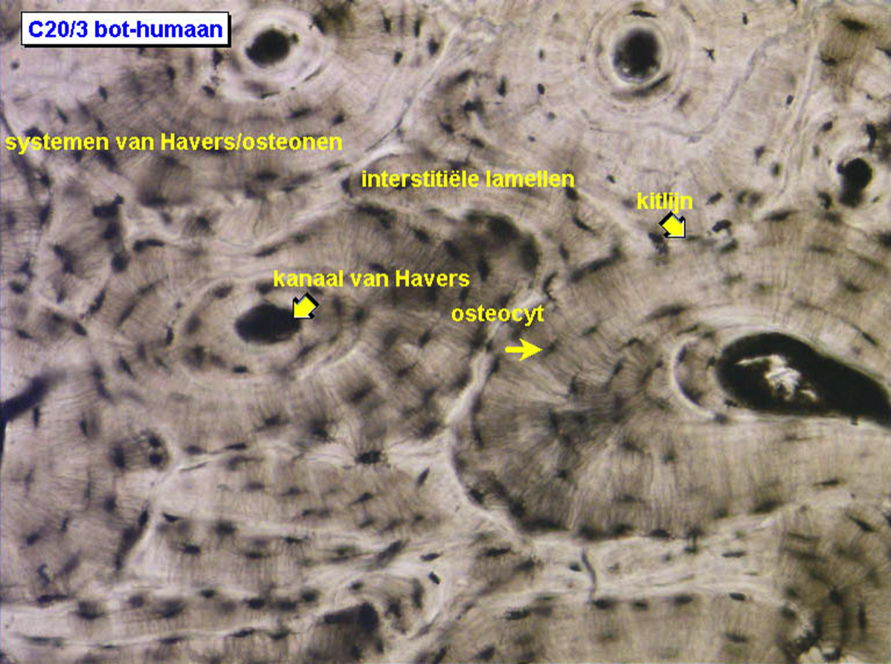
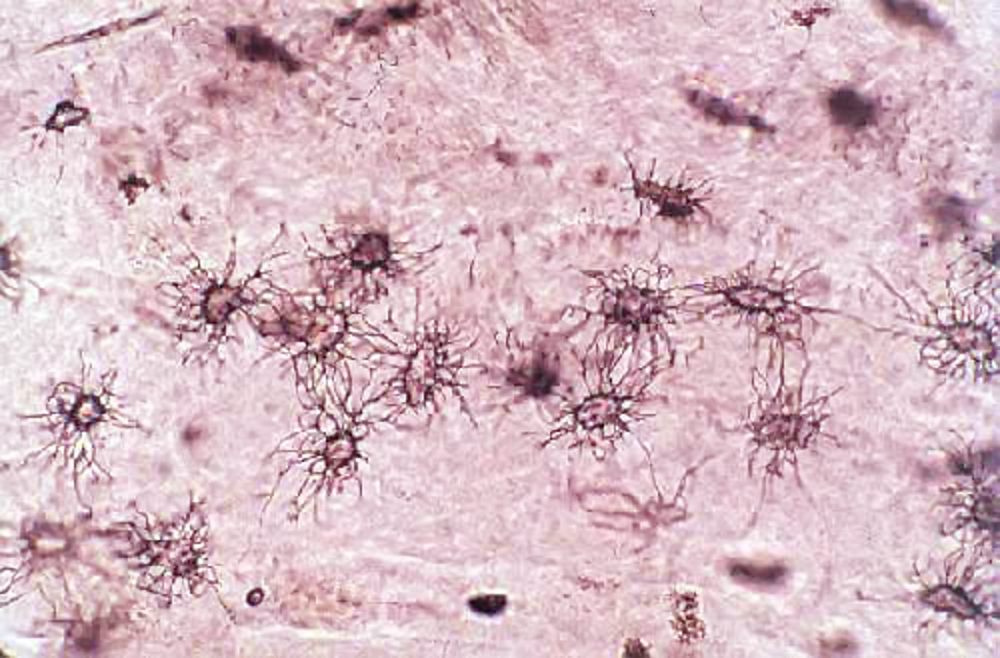

Compact lamellair bot
Dit is een dwarse snede door compact lamellair bot. De concentrische structuren rond een kleine openingen worden osteonen (O) of systemen van Havers genoemd. Aan de buitenkant van de osteonen liggen de interstitiële lamellen. Deze onregelmatig gevormde structuren zijn overblijfselen van oude osteonen die gedeeltelijk zijn verwijderd tijdens het voortdurende proces van bot-herstructurering of remodellering.
Het centrale osteonkanaal of kanaal van Havers (OC) is de doorgang voor bloedvaten, lymfevaten en zenuwen. De bloedvaten die door de kanalen van naburige osteonen lopen zijn met mekaar verbonden via verbindingskanalen (kanalen van Volkmann; LC). Het osteon-/verbindingskanaal begint aan het oppervlak van het bot op een plaats waar een bloedvat zich een weg baant door een voedingsopening. De vaten lopen door de kanalen langs de substantia compacta en vervoeren het bloed uiteindelijk naar het merg via de geperforeerde kanalen die in verbinding staan met de sinusoïden in het merg.
Het centrale osteonkanaal of kanaal van Havers (OC) is de doorgang voor bloedvaten, lymfevaten en zenuwen. De bloedvaten die door de kanalen van naburige osteonen lopen zijn met mekaar verbonden via verbindingskanalen (kanalen van Volkmann; LC). Het osteon-/verbindingskanaal begint aan het oppervlak van het bot op een plaats waar een bloedvat zich een weg baant door een voedingsopening. De vaten lopen door de kanalen langs de substantia compacta en vervoeren het bloed uiteindelijk naar het merg via de geperforeerde kanalen die in verbinding staan met de sinusoïden in het merg.




Het osteon is in feite een lange, potloodvormige structuur die bestaat uit 3 tot 20 lagen van lamellen waartussen de permanente celpopulatie van het bot, nl. de osteocyten liggen. Deze laatste zijn gevangen in kleine holtes of lacunae van waaruit straalsgewijs (= spinachtig) canaliculi lopen; dit zijn de kleine tunnels waardoor de uitlopers van twee naburige osteocyten contact maken. Op die manier kunnen alle osteocyten direct of indirect met mekaar communiceren (door nexusverbindingen). Ze kunnen dus informatie, voedings- en/of afvalstoffen van de ene plaats naar de andere overbrengen zonder daarvoor een beroep te moeten doen op de verharde botmatrix, hetgeen toch onmogelijk zou geweest zijn. De canaliculi zijn hier zichtbaar als radiair verlopende fijne uitlopers.
